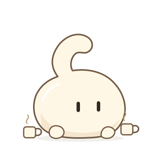
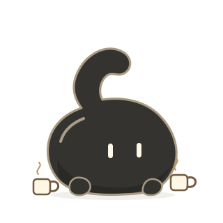

CC / Hand-drawn study · 02
还是 CC，换一种笔触。
四组黑白表情，三张寄给你的明信片。保留头顶的 C、两只眼睛和小脚，试着让它在手绘世界里也认得出来。
 角色参考
角色参考冻结正身
表情底色
同一个 CC，两种模样
每组左边 Light，右边 Dark · 相同动作与轮廓


缩到聊天里的小尺寸，也要认得出。带回来的一点生活
示例画面与示例文字，不是真实串门记录

这四组表情已接入源码中的初始包；本页明信片仍为虚构示例。SVG 共用固定角色模板；不是修改三维母版，也不是本轮调用模型生成的结果。旧表情和收藏保持原样。